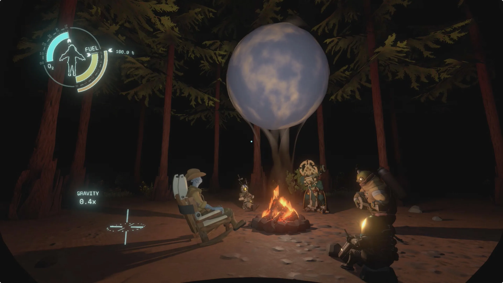

Os Nomai de Outer Wilds são apenas um dos clãs Nomai. Esse clã detectou um sinal mais velho que o universo, e translocou em sua direção imediatamente. Isso levou a quebra do Hospedeiro (a nave do clã) e impedindo a comunicação com outros clãs. O Olho parou de emitir sinais e nunca mais foi encontrado pelos Nomai em vida.
Mais tarde, o universo chegava ao seu fim. As últimas estrelas explodiam, enquanto o jogador se via preso em um loop. Depois de muito explorar, ele seria hábil à chegar ao Olho do Universo, corpo que os Nomai tanto sonhavam em encontrar.
O Olho do Universo em Outer Wilds tem uma natureza quântica. Ele é o fim do universo, e o começo de outro. A realidade quântica do Olho se molda de acordo com os sentimentos e memórias do observador consciente que o explora. Com a chegada do jogador, o fim do universo é marcado pela tradicional roda lenhosa de música, enquanto outro universo é formado.